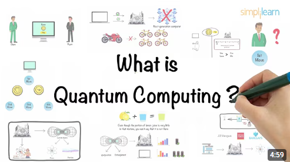
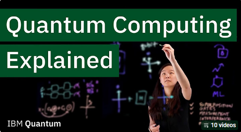

Drug Discovery
Quantum computers may help scientists discover new medicines faster.
Innovations Shaping Tomorrow
Quantum computing is a new type of computing that uses the principles of quantum physics to process information in powerful ways.
Unlike traditional computers that use bits, quantum computers use qubits, which can represent more complex information and may solve certain problems much faster than regular computers.
| Classical | Quantum |
| Uses bits | Uses qubits |
| 0 or 1 | 0, 1, or both |
| Best for everyday tasks | Best for complex calculations |
The basic unit of information in a quantum computer.
Allows qubits to represent multiple possibilities simultaneously.
Links qubits together so they behave as one system.
Helps quantum computers find the correct answer more efficiently.
Quantum computers may help scientists discover new medicines faster.
Quantum computers could eventually break some current encryption methods while also helping develop stronger quantum-safe security.
Researchers can simulate weather and chemical reactions more accurately.
Banks may use quantum computing for portfolio optimization and fraud detection.
Learn the fundamentals of quantum computing through these short educational videos.

